Weitere Datenübertragung Ihres Webseitenbesuchs an Google durch ein Opt-Out-Cookie stoppen - Klick!
Stop transferring your visit data to Google by a Opt-Out-Cookie - click!: Stop Google Analytics
Cookie Info. Datenschutzerklärung


 Altbau und Denkmalpflege Informationen - Startseite / Impressum
Altbau und Denkmalpflege Informationen - Startseite / Impressum
Inhaltsverzeichnis - Sitemap - über 1.500 Druckseiten unabhängige Bauinformationen +++
Fragen???
Die härtesten Bücher gegen den Klimabetrug - Kurz + deftig rezensiert +++
Bau- und Fachwerkbücher - Knapp + (teils) kritisch rezensiert
Altbauten kostengünstig sanieren:
Heiße Tipps gegen Sanierpfusch im bestimmt frechsten Baubuch aller Zeiten (PDF eBook + Druckversion)
Was moderne Bauweisen für unerfahrene Bauherren bedeuten können +++
Fertighaus - Fluch oder Segen?
Das Handwerkerquiz + Das Planerquiz für schlaue Bauherrn


Altbautaugliche Verfahren und Baustoffe
Kapitel 9+10:
Natursteinrestaurierung, Wandbildner und Fachwerkinstandsetzung [16]
Seite in
Unterkapitel aufgeteilt - Naturstein:
[1] [2] [3]
[4] [5] [6]
Steinboden:[7]
Reinigungstechnik:[8]
Wand: [9] [10] [11]
[12] [13] [14]
[15]
Fachwerk: [16] [17] [18]
[19]
Bodenaufbau/Holzboden: [20]
10a. Fachwerksanierung
(gilt im Prinzip auch für Blockbauten wie Lausitzer Blockbau/Umgebindehaus oder Waldlerhaus)
Gleich mal vorab: Wenn Sie hier nach Symbolik, Sinnzeichen, Allegorien, Mythos und Mythologie, Runen, Runenmystik,
Runengeheimnis, Runenmagie, Runenzauber, Geraune, Mystik, Schutzzauber und Zauberzeichen, Heilslehren und Heilsversprechungen im
Fachwerkgefüge suchen, empfehle ich Ihnen zwei Meinungs-Links, die darüber zwei arg gegensätzliche
Standpunkte repräsentieren - einmal "Fachwerk-Symbolik" (später "Formen, Schmuck und Symbolik im Fachwerkbau")
vom Fachwerkpapst Manfred Gerner
und zum anderen vom Fachwerkketzer G. Ulrich Großmann.
Eine schöne Rezension von Marcus Mrass zum themenrelevanten Buch von Hans-Günther Bigalke: "Geschnitzte Bilder und Figuren
an Fachwerkhäusern in Deutschland von 1450-1700" finden sie hier: Sehepunkte.
Wie fast immer, also auch bei der sonstigen Behandlung "heidnischer" Bildprogramme von der Vorzeit über die Antike und das Mittelalter
bis zur Renaissance, dem Barock und dem Klassizismus gibt es sozusagen keinerlei Programmdeutung im Hinblick auf die darin befindliche
Zodiakverrätselung bzw. Astralmythologie, aus der erst alle (!) sogenannten Grotesken, Schreckköpfe, Neidköpfe und
sonstiges wunderliches - meist auch das christliche - Figuralbeiwerk auflösbar und sachlich erklärbar wird. Oft wird ja nicht
einmal erkannt, daß es sich dabei um ein definiertes, geschweige denn astronomisch-astrologisches Bildprogramm handelt.
Sei's drum. Soviel zum beliebten Thema Fachwerkmagie und Fachwerkzauber.
Die Arbeitsgemeinschaft Historische Fachwerkstädte e.V. (ARGE) ist eine
Interessensvertretung / Lobby ihrer Mitglieder - etwa 150 deutsche Fachwerkstädte vom Bodensee (Meersburg) bis zur
Nordsee (Stade).
Die ARGE gibt Informationen zur Fachwerksanierung heraus, organisiert als Dachorganisation die
"Deutsche Fachwerkstraße" und verleiht den deutschen
Fachwerkpreis. Neuerdings will sie im Rahmen einer Fachwerktriennale
"Strategien, Konzepte und Projekte zum Umbau von Fachwerkstädten bzw. -quartieren präsentieren."
Da darf man schon gespannt sein, denn unter den Akteuren finden sich auch genau die, die dem deutschen
Fachwerk schon viel Leid angetan haben und noch weiter antun. Nicht nur, daß leitende Mitarbeiter des
einstigen Deutschen Zentrums für Handwerk und Denkmalpflege (heute aufgegangen in der Fortbildungseinrichtung
"Probstei Johannesberg gGmbH") noch zum totalen Skelettieren von
Fachwerkhäusern bis auf das nackte Holzgerüst als quasi unabdingbare Voraussetzung für eine fachgerechte
Schadensbeurteilung und Sanierung aufriefen (sogar im öffentlich-rechtlichen Fernsehen!), als in Bayern schon lange
und sehr erfolgreich die Mikrobefundung eingeführt war, sondern auch bei der auch aktuell immer noch betriebenen
Vollvergiftung im Rahmen der Schädlingsbekämpfung und der Dämmpropaganda - egal ob mit Schäumen,
Gespinsten, Schüttungen oder mit Leichtlehm und "U-Wert-optimierten Energiespar-Fenstern mit Wärmeschutzglas
/ Isolierglasscheiben". All das kann aber mangels bauphysikalischem Durchblick extreme Feuchteschäden auslösen.
1997 berichtete der damalige Projektberater für Untersuchungen und Gutachten des Deutschen Zentrums für
Handwerk und Denkmalpflege in Fulda, Rainer Klopfer, unter dem Titel "Zehntausende Fachwerkhäuser
"kaputtsaniert":
"Wir haben Häuser gesehen, die hatten 300 Jahre keinen Schaden und jetzt, nach der angeblichen Grundsanierung,
brechen sie zusammen. Die tragenden Balken verfaulen. Im Haus breitet sich der Schwamm aus. Sie sind verloren." Die
Bauschäden entstünden "durch falsche Außenanstriche, zu dichte Fenster, Wandaufbauten, die keinen
Wasserdampf durchlassen oder falsche Isoliermaßnahmen." (nach Neue Presse Coburg, 21.6.97.)
Was hier leider falsch ist - hätten Sie's gewußt?:
Es geht bestimmt nicht nur um "Wandaufbauten, die keinen Wasserdampf durchlassen", sondern um all
die famosen und von allerlei Fachwerkexperten inständig herbeigeflehten Schichtenkonstruktionen und Beschichtungen
der konstruktiven Bauteile der Fassade, die einmal das Ausheizen der dort zwangsläufig anfallenden Kondensat- und
Regenfeuchte verringern bis blockieren sowie um deren mangelnde Kapillarität - nicht Dampfdiffusion! Denn der
Feuchtetransport aus Baustoffen erfolgt im Verhältnis 1000:1 kapillar und nicht durch Diffusion.
Im Klartext:
Im Baustoff liegt die Feuchte vorrangig in flüssiger Phase vor, und die kann überwiegend nur kapillar, also
durch den Transport in den kapillaraktiven Porensystemen stattfinden. Vergessen: Das falsche /
konstruktionsbefeuchtende Heizen durch Konvektionsheizung. Korrekt, aber immer noch nicht hinreichend
bekannt, neben den Falschfarben auch der Einfluß der neuen Fenster, die eben nicht mehr als Sollkondensator die
überschüssige Raumluftfeuchte abtropfen lassen, sondern deren Extremkondensation in der Fachwerkfassade,
Decken- und Bodenkonstruktion erzwingen.
"Herr, schmeiß Hirn herab!", möchte man da aus tiefer Sorge ums Deutsche Fachwerk rufen.
Joachim Görres beschreibt im Immobilienteil der Süddeutschen Zeitung, Seite V2/2 am 11.9.2009, unter Berufung
auf Manfred Gerner, den ehem. Leiter des Handwerkszentrums in Fulda, die wesentlichen Schadensfaktoren für "nicht
mehr zu behebende Fäulnisschäden" seien "das Verfliesen von Fachwerk-Außenwänden, das
Schließen von Holzrissen mit dauerelastischen Materialien oder das Anbringen von stark wärmedämmenden
Baustoffen auf der Innenseite von Fachwerk-Außenwänden".
Aha. Immer noch werden auch die "leicht" dämmenden Baustoffe propagiert, obwohl diese - Leichtlehmbau,
ick hör dir trapsen! - durch die zwangsläufige Wandverdickung die Austrocknung der in jeder Heizperiode von der
Fachwerkfassade aufgenommene Feuchte be- bzw. verhindern. Und wer macht solche und die hier richtigerweise angeprangerten
Todsünden der Fachwerksanierung (Fachwerksünden)? Und wer plant bzw. empfiehlt sowas - weit entfernt von
jeder historischen Reparaturtradition und konstruktionsgerechtem Sanieren? Und welch von den
Ökoprofiteuren beeinflußter Gesetzgeber verordnet das ganze Gedämme, auf das sich die auftragsgeilen
Bauprofis landauf und -ab ständig frecher berufen? Und wer liefert Laborwerte und dank falscher
Versuchsaufbauten auch falsche Institutsergebnisse im Namen der allmächtigen Wissenschaft und Bauphysik als
abgefeimtes Marketing "moderner" - aber gleichwohl fachwerkschädigender Saniermethoden? Hä? Und welche
Denkmalschutzstiftung und welches Denkmalamt fördert derartige Fachwerkhausvernichtung mit fetten
Zerstörungsprämien?
Und warum bestellt der unerfahrene Fachwerkbesitzer solche Todesurteile für sein schmuckes Häuschen - und zwar
auf eigene Kosten, vielleicht auch etwas gefördert und bezuschußt? Wer macht den Reibach dabei, wer lebt von
sowas? Experten über Experten, oft mit weisen und wohlmeinenden Ratschlägen auf Kundenfang in einschlägigen
Bauherrenforen. Und voll im Trend. Also:
An welchen 12 Fakten / Todsünden erkennen Sie den für Ihr historisches Fachwerk bestens geeigneten
"Fachmann"?
1. Natürlicherweise (soweit gerissener/schlitzohroiger Handwerker) Totalverharmlosung aller jedem Fachmann
sofort erkennbarer Altschäden bei der Kaufberatung ahnungsloser Opfer / vor dem Sanierauftrag. Fluglöcher des auf
Hausschwamm / Naßfäulepilze angewiesenen gescheckten Nagekäfers? Einfach übersehen - aber dann:
Totalzerstörerische Voruntersuchung mit Hammer und Pickel als Sanierungsvorbereitung. Danach bleibt kein Gefache
mehr heil, keine Putzhaut mehr stabil, keine Renaissancebemalung mehr zu befunden: das Knochengerippe steht frei, die
Bude ist entkernt, die Kosten explodieren, der Bauherr zahlt. Vom verformungsgetreuen Aufmaß, einer bau- und
fassungsgeschichtlichen Befunduntersuchung und deren Analyse im Hinblick auf möglichst eingriffsarme
Bauuntersuchung und erhaltende, sparsame Instandsetzung hat man ja noch nichts gehört. Der Ausbau einiger
neuzeitlicher Wand- und Deckenverkleidungen hätte zwar genügen können - mehr Show ist jedoch die Totalmethode.
Das zeichnet eben den Experten aus - erst verharmlosen und danach möglichst viel Wind machen
und das verrottete Fachwerk mal richtig durchlüften.

So sieht das dann aus. Fachwerkskelettierung bis zum Gehtnichtmehr. Die hohe Schule der Fachwerkverwüstung
durch Holzschutzexperten - selbstverständlich unter den Augen des Denkmalamts. (Bild: Dipl.-Ing. Architekt Tamas Karascony)
Die Fortsetzung der Sanierung fällt dann äußerst einfach:
Nach dem Filetieren und Skelettieren ist das Bauwerk von allen Nichtfachwerkbauteilen
befreit. Nun kann man - freilich erst nach DIN-gemäß überzogenstem Totalrückschnitt aller
angegammelten morschvermulmten Hölzöi, egal, wie viel Resttragfähigkeit noch existiert - ans
Geraderichten mit Hydraulpressen und Schrauben, mit Winden und Vorschlaghammer gehen. Daß die Verformungen schon
sehr alt sind und viele Ausbaustufen bis zu den Anschlüssen von Boden, Wand und Decke, von Fenster und Türen
auf die Verformung Bezug nehmen, stört dann ja nicht. Hauptsache die Baukosten explodieren und kein Gefach bleibt
erhalten. Der Zimmerer hat's so besonders bequem, der Bauherrschaft und dem interessierten Planer unter
Verweis auf den mangelnden Neubaucharakter und einiger sonstig verdächtigen Stellen der alten
Konstruktionshölzer möglichst viel feuchtes Bauholz aus Rußland, Polen oder dem Hindukusch
aufzuschwätzen. Aber unbedingt gebeilt! Vom Denkmalwert bleibt dann nur eine schale Erinnerung. Hauptsache, man
sieht viel Holz zum Schluß. Auf erhaltungswürdige Bauteile muß man dabei nicht besonders achten, sie
verrecken während der wüsten Baumaßnahme und müssen dann baukostensteigernd ersetzt werden.
Baukosten: 3 x Neubau, Anschauungsmaterial zuhauf in den deutschen Fachwerkstädten. Da hat doch jeder was davon,
Fachwerkfördermittel so simpel zu verwursten. Gut, wenn der Fachmann einen allerbesten Draht zur
Förderbehörde hat!
Ein besonders brutales Beispiel fränkischer Fachwerksanierung bietet der überregional berümt
gewordene Dauersanierungsfall "Fachwerk-Pfarrhaus Gärtenroth"
2. Holz-für-Holzuntersuchung mit irrer Technik und Dokumentation. Der Bauherr zahlt´s ja. Warum sollte
man sich mit weniger zufrieden geben, wenn man schon die expertentumbeweisenden Apparillos (z.B. für
Bohrwiderstandsmessung) hat. Daß man Untersuchungstechnik nur gezielt und punktuell einsetzt, wenn andere
Methoden nicht mehr weiterhelfen, rentiert sich ja nicht. Und wenn nur ein bißchen Erfahrung bei der Suche nach
typischen Schwachpunkten der Holzkonstruktion genügt? Warum denn einfach, wenn´s auch brutal geht!
Dafür erfolgt dann die Vornamensverleihung für jeden Holzwurm. Übertriebene Angsteinjagerei mit dollen
Horroszenarien wegen einiger Befallsspuren im Splintholz, wodurch die Tragfähigkeit kaum beeinträchtigt wird.
Dramatisierung von ggf. tatsächlichem Hausschwammbefall. Das kostet Totalerneuerung und Geld und bringt gar nix.
Holzschutzschwachverstand pur. Der Bauherr zahlt doch einen empfohlenen Fachmann gern.
3. Verwechslung des Fachwerkkunst mit Disneyland. Konstruktive Fachwerke des 18./19. Jahrhunderts, ohne Zierformen
wie Feuerbock oder Gefügekunst des Mittelalters - im Wahn der 30er germanisierend freigeholzt und von ihrem
steinbautäuschenden Putzkleid gestrippt - werden unbedingt als Sichtfachwerk weitertradiert. Obwohl das gegen die
Handwerksregeln verstößt werden dabei z.B. die Gefache kissenförmig wassersaugend aufgeputzt. Das
Fassadenbild mit natursteinimitierenden Brettelgewänden mißachtet dann Technik und Stil - befriedigt aber
durch Acrylverfugung und heimattümelnder Belackung und Lasur dennoch den Publikumsgeschmack. Hauptsache, das
Holzgefüge wird maximal mißhandelt und zum baldmöglichsten Verrotten verurteilt.
4. Schwamm- und Pilzbekämpfung gegen Hausschwamm, braunen Kellerschwamm, weißen Porenschwamm und
sonstigen Naßfäulepilzen mit Gift und metrigem Rückschnitt unter ritueller Beschwörung der
vermarktungsfördernd-verbraucherfeindlichen Bauordnung und Holzschutz-DIN 68 800 in all ihren bösen Teilen.
Mehr kann man Fachwerk nicht schädigen. Gleichzeitig macht das Anwender und Bewohnern krank. Warum sollte man auch
giftfreie Holzschutzmittel benutzen, die obendrein das Holz festigen und dessen Entflammbarkeit
herabsetzen? Wofür bekommt denn der normentreue Statiker und holzschutzerkrankte Zimmermann seine Kröten,
wenn sie dann das Bauwerk nicht unter ständigem "Hausschwamm, Hausschwamm!"-Gejubel optimal vergiften und zur
Sondermülldeponie verwandeln dürfen - vollkommen uneigennützig und neutral beraten vom sogenannten
"Holzschutzsachverständigen" und dessen Zufallsbekanntschaften aus der bauchemischen Industrie? Und spätere
Reparaturen und Umbauten zum gnadenlosen Vergiftungsangriff auf den Handwerker vorprogrammieren? Strengstens nach
Zulassung des DIBt, RAL, DIN und der BAM?
5. Ausspänen mit kunstharzkleber-eingeleimten baufeuchten Spänen. Gegenüber dem Fachwerkholz
trockenere Späne hätten sich durch Feuchtannahme ohne Kleber eingeklemmt. Die Klebefuge wirkt dann als
Trocknungssperre, das sichert Wasserstau und Verfaulen.
6. Neuholzschwellen werden mit Markzentrum in der unteren Hälfte eingebaut. Die unvermeidlich entstehenden
Schwundrisse weisen dann als Wasserfalle nach oben. Und der Sockel wird gegen niemals aufsteigende
Feuchte "trockengelegt" und mit waserrückhaltendem "Sanierputz" abgesperrt.
7. Ausfachung neuer Gefache mit möglichst wasserrückhaltenden
Baustoffe wie Bims, Porenbeton oder porosierten Ziegeln. Der Super-Gau natürlich sind faserige / porige Dämmstoffe wie Weichholzfaser-Platten, Mineralwolledämmung und Polystrol-Schaumplatten. Zur Erheiterung
der Holzschädlinge. Unterstützt mit möglichst trocknungsblockierender
Versiegelung/Abdichtung der Gefach-Holz-Fuge sowie der Gefachfläche selbst. Das ist dann normgerecht.
Und fördert durch Wasserstau hinter der Dichtfuge die Vermorschung.
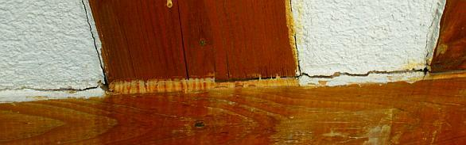
+
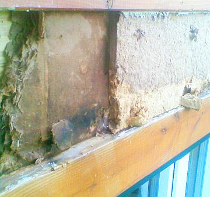
+
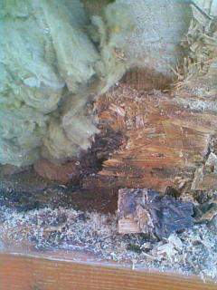
Die Industrielösung für das Fachwerkgefache, voll der Energieeinsparverordnung EnEV entsprechend mit allerbestem U-Wert / Dämmwert:
Beschichtung mit wasserabweisendem Kunstharzputz auf Holzfaserplatten-Gefache, dahinter Mineralwolle-Gewöll und kunstharzverklebte Holzschnipselplatte (OSB-Platte). Die
Versiegelung der unvermeidlichen Gefachefuge mit Silikon - im Fachwerk-Holzton täuschend überstrichen, ein
Bravo dem Malermeister! - Alles bestens patschnass verrottend, da wassersaufend und schimmelpilzfördernd bis zum Totalverfall der
Fachwerkbalken. Vorzustand und nach Freilegung/Öffnung/Ausbau des schimmelig-muffig bis in die
Innenräumen herumstinkenden Gefacheinnenlebens.
Wobei die Gefachreparatur unbedingt zement- und traßhaltigste starrste, feuchterückhaltende und
schadsalzreiche Mauermörtel auf, an und unter die arg weichen, rißvermeidend elastischen Luftkalkmörtel
des Bestands draufsetzen muß. Immer möglichst andere Steinsorten verwenden! Auf blöde Formatanpassung
an schrägen Holzverlauf unbedingt bzw. weitestgehend bitte verzichten. Weil doch immer gar zu bald das freche
Brotzeitglöckerl läuten will! Vor mi a zwaa Läberkäissämpln mäd Gurggn, am Sänft un
zwa Byr!
Gute Beispiele aus dem Auftragsbuch denkmalerfahrener, -empfohlener, -geförderter und belobigter Planer,
Zimmerleute und Maurer:
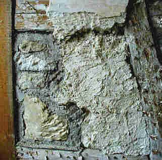
+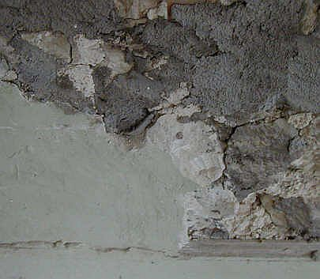
+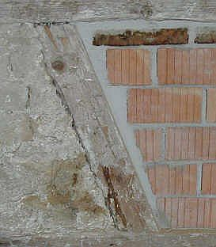
Ach wie schön, wasserspeichernd chromatgesund und würzig schadsalzhaltig der blaugraue
Zement in seinem reichen Farbenspiel mit handwerklich unübertreffbarer Noblesse!
Das kann nur noch durch schimmelpilzbefallene naßdicht absperrende und ewig feuchterückhaltende,
rißfreudige Stroh-Lehmgefache übertroffen werden! Aus denen hin und wieder auch mal das Getreide (Dinkel?
Hafer? Gerste? Weizen? Emmer? Mais? Reis?) ökogrün rauswuchert. Alles schon gesehen. Sie auch?
Ein noch besseres Beispiel für die kostengünstige Fachwerksanierung, selbstverständlich nicht vom
Zimmermann, sondern nach Maler-/Putzer-/Gipser-/Stukkateur-Bauweise. Billig-Denkmalpflege in Bayern heute (2009):
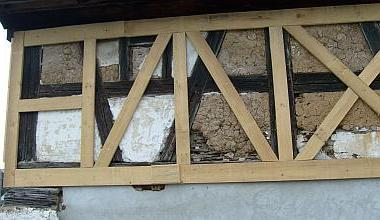
+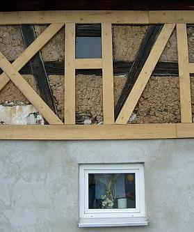
+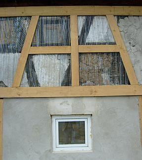
+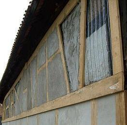
+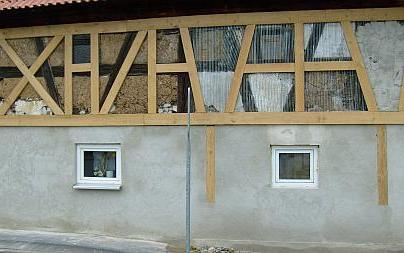
+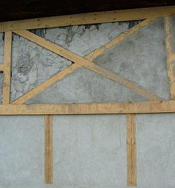
Unübertrefflich der das Original so dermaßen dialektisch verhohnepiepelnde Einfallsreichtum des
Handwerksmeisters bei der jedes Vorbild sprengenden,nein, geradezu auf den Kopf stellenden Gestaltungsunordnung seiner
Fachwerkimitation. Daß die so knstvoll geschreinerten "Gefachelchen" dann durch trocknungsblockierenden und sich
flugs von der Brettlkante ablösenden und dann kapillar regensaufenden Zementmörtel zugeschmiert werden,
darauf dann wasserabweisende und feuchtestauende Plastikpampensoße (pardon: Markenmaterial aus deutscher
Bauchemieproduktion!) - ist doch selbstverständliche Übung und Ehrensache!
Fein durchdacht, die kondensaterzwingende, nicht hinterlüftete Luftschicht durch "trockenen", will sagen
unvermörtelten Vorbau der Vorsatzschale aus Brettfachwerk. Sehr, sehr lustig auch die äußersten,
unübertreffbaren Gestaltungswillen verratenden "Lösungen" Pro & Kontra Fensterln. Das ganze zum Zeitpunkt der
Aufnahme geradezu ein Kabinettsstückchen aus dem Lehrbuch des Meisters für Putzer- und Malerlehrbuben an
Fachwerkfassden. Genau hingucken lohnt!
Und die Fensterla im Erdgeschoß? Aus Plastik - man gönnt sich ja sonst nix. Das war aber der Schreiner! Alle
dürfen ja ans Fachwerkhaus ran - Kompetenz und 25 Prozent weniger Lichteinfall als vorher garantiert, für was
gibt es denn die elektrische Beleuchtung (künftig mit Energiesparlampen!)?
Was fehlt? Die "gesetzlich vorgeschriebene" Wärmedämmung! Aber freilich kommt die als wassersaugende
Schimmelpilzbrut-Innendämmung dran. Man will doch auch Energie sparen, wenn man sonst schon am Notwendigsten
fleißgst eingespart und ansonsten keinen Aufwand gescheut hat ...
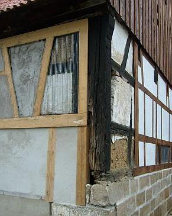
+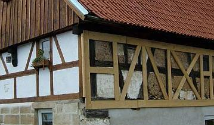
Da ist der dorische Eckkonflikt ein Klacks dagegen, wa? "Heureka!", möchte man dem lattigen Meister des
Brettlwerks zurufen.
+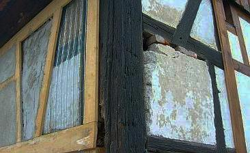
Wobei auch die Maurerkunst bei der Gefachereparatur ihre geschichtlichen Pfusch-Spuren hinterließ: Wassersauge-Kunststein,
früher die erste Wahl bei technisch falschen Ausfachungen. Und heute? Dreimal dürfen Sie raten ...
Noch weiter? Hier!
Das meinen die Anderen (doch Vorsicht vor Kaputtdämmern und Vergiftern!):
Fachwerkliteratur / Bücher über Fachwerkrestaurierung / Fachwerkinstandsetzung / Fachwerkreparatur / Fachwerkbau / Fachwerkhaus / Fachwerkgefüge (hier rezensiert)
Fachliteratur und Angebote Holzschutz
Altbau und Denkmalpflege Informationen Startseite